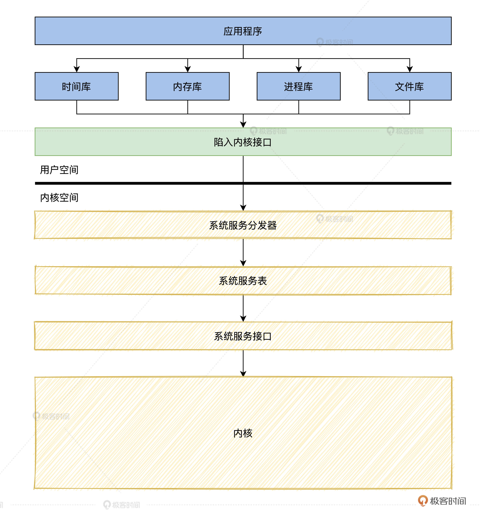

- 00 开篇词 为什么要学写一个操作系统？.md.html
- 00 编辑手记 升级认知，迭代自己的操作系统.md.html
- 01 程序的运行过程：从代码到机器运行.md.html
- 02 几行汇编几行C：实现一个最简单的内核.md.html
- 03 黑盒之中有什么：内核结构与设计.md.html
- 04 震撼的Linux全景图：业界成熟的内核架构长什么样？.md.html
- 05 CPU工作模式：执行程序的三种模式.md.html
- 06 虚幻与真实：程序中的地址如何转换？.md.html
- 07 Cache与内存：程序放在哪儿？.md.html
- 08 锁：并发操作中，解决数据同步的四种方法.md.html
- 09 瞧一瞧Linux：Linux的自旋锁和信号量如何实现？.md.html
- 10 设置工作模式与环境（上）：建立计算机.md.html
- 11 设置工作模式与环境（中）：建造二级引导器.md.html
- 12 设置工作模式与环境（下）：探查和收集信息.md.html
- 13 第一个C函数：如何实现板级初始化？.md.html
- 14 Linux初始化（上）：GRUB与vmlinuz的结构.md.html
- 15 Linux初始化（下）：从_start到第一个进程.md.html
- 16 划分土地（上）：如何划分与组织内存？.md.html
- 17 划分土地（中）：如何实现内存页面初始化？.md.html
- 18 划分土地（下）：如何实现内存页的分配与释放？.md.html
- 19 土地不能浪费：如何管理内存对象？.md.html
- 20 土地需求扩大与保障：如何表示虚拟内存？.md.html
- 21 土地需求扩大与保障：如何分配和释放虚拟内存？.md.html
- 22 瞧一瞧Linux：伙伴系统如何分配内存？.md.html
- 23 瞧一瞧Linux：SLAB如何分配内存？.md.html
- 24 活动的描述：到底什么是进程？.md.html
- 25 多个活动要安排（上）：多进程如何调度？.md.html
- 26 多个活动要安排（下）：如何实现进程的等待与唤醒机制？.md.html
- 27 瞧一瞧Linux：Linux如何实现进程与进程调度_.md.html
- 28 部门分类：如何表示设备类型与设备驱动？.md.html
- 29 部门建立：如何在内核中注册设备？.md.html
- 30 部门响应：设备如何处理内核I_O包？.md.html
- 31 瞧一瞧Linux：如何获取所有设备信息？.md.html
- 32 仓库结构：如何组织文件_.md.html
- 33 仓库划分：文件系统的格式化操作.md.html
- 34 仓库管理：如何实现文件的六大基本操作？.md.html
- 35 瞧一瞧Linux：虚拟文件系统如何管理文件？.md.html
- 36 从URL到网卡：如何全局观察网络数据流动？.md.html
- 37 从内核到应用：网络数据在内核中如何流转.md.html
- 38 从单排到团战：详解操作系统的宏观网络架构.md.html
- 39 瞧一瞧Linux：详解socket实现与网络编程接口.md.html
- 40 瞧一瞧Linux：详解socket的接口实现.md.html
- 41 服务接口：如何搭建沟通桥梁？.md.html
- 42 瞧一瞧Linux：如何实现系统API？.md.html
- 43 虚拟机内核：KVM是什么？.md.html
- 44 容器：如何理解容器的实现机制？.md.html
- 45 ARM新宠：苹果的M1芯片因何而快？.md.html
- 46 AArch64体系：ARM最新编程架构模型剖析.md.html
- LMOS来信：第二季课程带你“手撕”计算机基础.md.html
- 大咖助场 以无法为有法，以无限为有限.md.html
- 用户故事 yiyang：我的上机实验“爬坑指南”.md.html
- 用户故事 成为面向“知识库”的工程师.md.html
- 用户故事 技术人如何做选择，路才越走越宽？.md.html
- 用户故事 操作系统发烧友：看不懂？因为你没动手.md.html
- 用户故事 用好动态调试，助力课程学习.md.html
- 用户故事 艾同学：路虽远，行则将至.md.html
- 结束语 生活可以一地鸡毛，但操作系统却是心中的光.md.html
- 捐赠
41 服务接口：如何搭建沟通桥梁？
你好，我是LMOS。
一路走来，咱们的Cosmos系统已经有内存管理，进程、文件、I/O了，这些重要的组件已经建立了，也就是说它们可以向应用程序提供服务了。
但就好像你去各政府部门办理业务证件一样，首先是前台工作人员接待你，对你的业务需求进行初级预判，然后后台人员进行审核并进行业务办理，最后由前台人员回复，并且给你开好相关业务证件。
今天，我们就来实现Cosmos下的“前台工作人员”，我们称之为服务接口，也可以说是Cosmos的API。代码你可以从这里下载。
服务接口的结构
我们先来设计一下服务接口的整体结构，即Cosmos的API结构。因为Cosmos的API数量很多，所以我们先来分个类，它们分别是进程类、内存类、文件类和时间类的API。这些API还会被上层C库封装，方便应用程序调用。
为了帮你理解它们之间的关系，我为你准备了一幅图，如下所示。

结合上图可以看到，我们的应用程序库分为时间库、进程库、内存库、文件库这几种类型。
通常情况下，应用程序中调用的是一些库函数。库函数是对系统服务的封装，有的库函数是直接调用相应的系统服务；而有的库函数为了完成特定的功能，则调用了几个相应的系统服务；还有一些库函数完成的功能不需要调用相应的系统调用，这时前台接待人员也就是“库函数”，可以自行处理。
如何进入内核
由上图我们还可以看出，应用程序和库函数都在用户空间中，而系统服务却在内核空间中，想要让代码控制流从用户空间进入到内核空间中，如何穿过CPU保护模式的“铜墙铁壁”才是关键。下面我们就一起来探索这个问题。
软中断指令
请你回忆下，CPU长模式下如何处理中断的（不熟悉的可以回看第5课和第13课）？
设备向CPU发送一个中断信号，CPU接受到这个电子信号后，在允许响应中断的情况下，就会中断当前正在运行的程序，自动切换到相应的CPU R0特权级，并跳转到中断门描述符中相应的地址上运行中断处理代码。
当然，这里的中断处理代码就是操作系统内核的代码，这样CPU的控制权就转到操作系统内核的手中了。
其实，应用软件也可以给CPU发送中断。现代CPU设计时都会设计这样一条指令，一旦执行该指令，CPU就要中断当前正在运行的程序，自动跳转到相应的固定地址上运行代码。当然这里的代码也就是操作系统内核的代码，就这样CPU的控制权同样会回到操作系统内核的手中。
因为这条指令模拟了中断的电子信号，所以称为软中断指令。在x86 CPU上这条指令是int指令。例如int255。int指令后面需要跟一个常数，这个常数表示CPU从中断表描述符表中取得第几个中断描述符进入内核。
传递参数
虽然int指令提供了应用程序进入操作系统内核函数的底层机制，但是我们还需要解决参数传递的问题。
因为你必须要告诉操作系统你要干什么，系统才能做出相应的反馈。比如你要分配内存，分配多大的内存，这些信息必须要以参数的形式传递给操作系统内核。
因为应用程序运行在用户空间时，用的是用户栈，当它切换到内核空间时，用的是内核栈。所以参数的传递，就需要硬性地规定一下，要么所有的参数都用寄存器传递，要么所有的参数都保存在用户栈中。
显然，第一种用寄存器传递所有参数的方法要简单得多，事实上有很多操作系统就是用寄存器传递参数的。
我们使用RBX、RCX、RDX、RDI、RSI这5个寄存器来传递参数，事实上一个系统服务接口函数不会超过5个参数，所以这是足够的。而RAX寄存器中保存着一个整数，称为系统服务号。在系统服务分发器中，会根据这个系统服务号调用相应的函数。
因为C编译器不能处理这种参数传递形式，另外C编译器也不支持int指令，所以要用汇编代码来处理这种问题。
下面我们来建立一个cosmos/include/libinc/lapinrentry.h文件，在这里写上后面的代码。
//传递一个参数所用的宏
#define API_ENTRY_PARE1(intnr,rets,pval1) \
__asm__ __volatile__(\
"movq %[inr],%%rax\n\t"\//系统服务号
"movq %[prv1],%%rbx\n\t"\//第一个参数
"int $255 \n\t"\//触发中断
"movq %%rax,%[retval] \n\t"\//处理返回结果
:[retval] "=r" (rets)\
:[inr] "r" (intnr),[prv1]"r" (pval1)\
:"rax","rbx","cc","memory"\
)
//传递四个参数所用的宏
#define API_ENTRY_PARE4(intnr,rets,pval1,pval2,pval3,pval4) \
__asm__ __volatile__(\
"movq %[inr],%%rax \n\t"\//系统服务号
"movq %[prv1],%%rbx \n\t"\//第一个参数
"movq %[prv2],%%rcx \n\t"\//第二个参数
"movq %[prv3],%%rdx \n\t"\//第三个参数
"movq %[prv4],%%rsi \n\t"\//第四个参数
"int $255 \n\t"\//触发中断
"movq %%rax,%[retval] \n\t"\//处理返回结果
:[retval] "=r" (rets)\
:[inr] "r" (intnr),[prv1]"g" (pval1),\
[prv2] "g" (pval2),[prv3]"g" (pval3),\
[prv4] "g" (pval4)\
:"rax","rbx","rcx","rdx","rsi","cc","memory"\
)
上述代码中只展示了两个宏。其实是有四个，在代码文件中我已经帮你写好了，主要功能是用来解决传递参数和触发中断问题，并且还需要处理系统返回的结果。这些都是用C语言中嵌入汇编代码的方式来实现的。
下面我们用它来写一个系统服务接口，代码如下所示。
//请求分配内存服务
void* api_mallocblk(size_t blksz)
{
void* retadr;
//把系统服务号，返回变量和请求分配的内存大小
API_ENTRY_PARE1(INR_MM_ALLOC,retadr,blksz);
return retadr;
}
上述代码可以被库函数调用，也可以由应用程序直接调用，它用API_ENTRY_PARE1宏传递参数和触发中断进入Cosmos内核，最终将由内存管理模块相应分配内存服务的请求。
到这里，我们已经解决了如何进入内核和传递参数的问题了，下面我们看看进入内核之后要做些什么。
系统服务分发器
由于执行了int指令后，CPU会停止当前代码执行，转而执行对应的中断处理代码。再加上随着系统功能的增加，系统服务也会增加，但是中断的数量却是有限的，所以我们不能每个系统服务都占用一个中断描述符。
那这个问题怎么解决呢？其实我们可以只使用一个中断描述符，然后通过系统服务号来区分是哪个服务。这其实就是系统服务器分发器完成的工作。
实现系统服务分发器
其实系统服务分发器就是一个函数，它由中断处理代码调用，在它的内部根据系统服务号来调用相应的服务。下面我们一起在cosmos/kernel/krlservice.c文件中写好这个函数，代码如下所示。
sysstus_t krlservice(uint_t inr, void* sframe)
{
if(INR_MAX <= inr)//判断服务号是否大于最大服务号
{
return SYSSTUSERR;
}
if(NULL == osservicetab[inr])//判断是否有服务接口函数
{
return SYSSTUSERR;
}
return osservicetab[inr](inr, (stkparame_t*)sframe);//调用对应的服务接口函数
}
上面的系统服务分发器函数现在就写好了。其实逻辑非常简单，就是先对服务号进行判断，如果大于系统中最大的服务号，就返回一个错误状态表示服务失败。然后判断是否有服务接口函数。最后这两个检查通过之后，就可以调用相应的服务接口了。
那么krlservice函数是谁调用的呢？答案是中断处理的框架函数，如下所示。
sysstus_t hal_syscl_allocator(uint_t inr,void* krnlsframp)
{
return krlservice(inr,krnlsframp);
}
hal_syscl_allocator函数则是由我们系统中断处理的第一层汇编代码调用的，这个汇编代码主要是将进程的用户态CPU寄存器保存在内核栈中，代码如下所示。
//cosmos/include/halinc/kernel.inc
%macro EXI_SCALL 0
push rbx//保存通用寄存器到内核栈
push rcx
push rdx
push rbp
push rsi
push rdi
//删除了一些代码
mov rdi, rax //处理hal_syscl_allocator函数第一个参数inr
mov rsi, rsp //处理hal_syscl_allocator函数第二个参数krnlsframp
call hal_syscl_allocator //调用hal_syscl_allocator函数
//删除了一些代码
pop rdi
pop rsi
pop rbp
pop rdx
pop rcx
pop rbx//从内核栈中恢复通用寄存器
iretq //中断返回
%endmacro
//cosmos/hal/x86/kernel.asm
exi_sys_call:
EXI_SCALL
上述代码中的exi_sys_call标号的地址保存在第255个中断门描述符中。这样执行了int $255之后，CPU就会自动跳转到exi_sys_call标号处运行，从而进入内核开始运行，最终调用krlservice函数，开始执行系统服务。
系统服务表
从上面的代码可以看出，我们不可能每个系统服务都占用一个中断描述符，所以要设计一个叫做系统服务表的东西，用来存放各种系统服务的入口函数，它能在krlservice函数中根据服务号，调用相应系统服务表中相应的服务入口函数。怎么实现系统服务表呢？如果你想到函数指针数组，这说明你和我想到一块了。
下面我们一起来定义这个函数指针数组，它是全局的，我们放在cosmos/kernel/krlglobal.c中，代码如下所示。
typedef struct s_STKPARAME
{
u64_t gs;
u64_t fs;
u64_t es;
u64_t ds;
u64_t r15;
u64_t r14;
u64_t r13;
u64_t r12;
u64_t r11;
u64_t r10;
u64_t r9;
u64_t r8;
u64_t parmv5;//rdi;
u64_t parmv4;//rsi;
u64_t rbp;
u64_t parmv3;//rdx;
u64_t parmv2;//rcx;
u64_t parmv1;//rbx;
u64_t rvsrip;
u64_t rvscs;
u64_t rvsrflags;
u64_t rvsrsp;
u64_t rvsss;
}stkparame_t;
//服务函数类型
typedef sysstus_t (*syscall_t)(uint_t inr,stkparame_t* stkparm);
//cosmos/kernel/krlglobal.c
KRL_DEFGLOB_VARIABLE(syscall_t,osservicetab)[INR_MAX]={};
我们知道，执行int指令后会CPU会进入中断处理流程。中断处理流程的第一步就是把CPU的一寄存器压入内核栈中，前面系统传递参数正是通过寄存器传递的，而寄存器就保存在内核栈中。
所以我们需要定义一个stkparame_t结构，用来提取内核栈中的参数。
接着是第二步，我们可以查看一下hal_syscl_allocator函数的第二个参数，正是传递的RSP寄存器的值，只要把这个值转换成stkparame_t结构的地址，就能提取内核栈中的参数了。
但是目前osservicetab数组中为空，什么也没有，这是因为我们还没有实现相应服务接口函数。下面我们就来实现它。
系统服务实例
现在我们已经搞清楚了实现系统服务的所有机制，下面我们就要去实现Cosmos的系统服务了。
其实我已经帮你实现了大多数系统服务了，我没有介绍所有系统服务的实现过程 ，但是每个系统服务的实现原理是相同的。如果每个系统服务都写一遍将非常浪费，所以我选择一个系统服务做为例子，来带你了解实现过程。相信以你的智慧和能力，一定能够举一反三。
我们下面就来实现系统时间系统服务，应用程序也是经常要获取时间数据的。
时间库
根据前面所讲，应用程序开发者往往不是直接调用系统API（应用程序编程接口，我们称为服务接口），而是经常调用某个库来达到目的。
所以，我们要先来实现一个时间的库函数。首先，我们需要建立一个cosmos/lib/libtime.c文件，在里面写上后面这段代码。
//时间库函数
sysstus_t time(times_t *ttime)
{
sysstus_t rets = api_time(ttime);//调用时间API
return rets;
}
time库函数非常简单，就是对系统API的封装、应用程序需要传递一个times_t结构的地址，这是这个系统API的要求， 这个结构也是由系统定义的，如下所示。
typedef struct s_TIME
{
uint_t year;
uint_t mon;
uint_t day;
uint_t date;
uint_t hour;
uint_t min;
uint_t sec;
}times_t;
我们可以看到，上述结构中定义了年、月、日、时、分、秒。系统内核会将时间信息填入这个结构中，然后返回，这样一来，时间数据就可以返回给应用程序了。
时间API接口
时间库函数已经写好了，在库中需要调用时间API接口，因为库和API接口函数不同层次的，有时应用程序也会直接调用API接口函数，所以我们要分为不同模块。
下面我们建立一个cosmos/lib/lapitime.c文件，并在里面实现api_time函数，如下所示。
sysstus_t api_time(buf_t ttime)
{
sysstus_t rets;
API_ENTRY_PARE1(INR_TIME,rets,ttime);//处理参数，执行int指令
return rets;
}
INR_TIME是系统服务号，它经过API_ENTRY_PARE1宏处理，把INR_TIME和ttime、rets关联到相应的寄存器，如果不明白可以参考前面的参数传递中使用寄存器的情况。最后就是执行int指令进入内核，开始运行时间服务代码。
内核态时间服务接口
当执行int指令后，就进入了内核模式下开始执行内核代码了。系统服务分发器会根据服务号从系统服务表中取出相应的函数并调用。因为我们这里要响应的是时间服务，所以取用的自然就是时间服务的接口函数。
下面我们来建立一个cosmos/kernel/krltime.c文件，写出这个时间服务的接口函数，代码如下所示。
sysstus_t krlsvetabl_time(uint_t inr, stkparame_t *stkparv)
{
if (inr != INR_TIME)//判断是否时间服务号
{
return SYSSTUSERR;
}
//调用真正时间服务函数
return krlsve_time((time_t *)stkparv->parmv1);
}
每个服务接口函数的参数形式都是固定的，我们在前面已经讲过了，但是这个krlsvetabl_time函数一定要放在系统服务表中才可以，系统服务表其实是个函数指针数组。虽然前面已经提过了，但是那时osservicetab数组是空的，现在我们要把krlsvetabl_time函数放进去，如下所示。
KRL_DEFGLOB_VARIABLE(syscall_t, osservicetab)[INR_MAX] = {
NULL, krlsvetabl_mallocblk,//内存分配服务接口
krlsvetabl_mfreeblk, //内存释放服务接口
krlsvetabl_exel_thread,//进程服务接口
krlsvetabl_exit_thread,//进程退出服务接口
krlsvetabl_retn_threadhand,//获取进程id服务接口
krlsvetabl_retn_threadstats,//获取进程状态服务接口
krlsvetabl_set_threadstats,//设置进程状态服务接口
krlsvetabl_open, krlsvetabl_close,//文件打开、关闭服务接口
krlsvetabl_read, krlsvetabl_write,//文件读、写服务接口
krlsvetabl_ioctrl, krlsvetabl_lseek,//文件随机读写和控制服务接口
krlsvetabl_time};//获取时间服务接口
我们的获取时间服务接口占最后一个，第0个要保留，其它的服务接口函数我已经帮你实现好了，可以自己查看代码。这样就能调用到krlsvetabl_time函数完成服务功能了。
实现时间服务
上面我们只实现了时间服务的接口函数，这个函数还需要调用真正完成功能的函数，下面我们来实现它。想在该函数中完成获取时间数据的功能，我们依然要在cosmos/kernel/krltime.c文件中来实现，如下所示。
sysstus_t krlsve_time(time_t *time)
{
if (time == NULL)//对参数进行判断
{
return SYSSTUSERR;
}
ktime_t *initp = &osktime;//操作系统保存时间的结构
cpuflg_t cpufg;
krlspinlock_cli(&initp->kt_lock, &cpufg);//加锁
time->year = initp->kt_year;
time->mon = initp->kt_mon;
time->day = initp->kt_day;
time->date = initp->kt_date;
time->hour = initp->kt_hour;
time->min = initp->kt_min;
time->sec = initp->kt_sec;//把时间数据写入到参数指向的内存
krlspinunlock_sti(&initp->kt_lock, &cpufg);//解锁
return SYSSTUSOK;//返回正确的状态
}
krlsve_time函数，只是把系统的时间数据读取出来，写入用户应用程序传入缓冲区中，由于osktime这个结构实例会由其它代码自动更新，所以要加锁访问。好了，这样一个简单的系统服务函数就实现了。
系统服务函数的执行过程
我们已经实现了一个获取时间的系统服务函数，我想你应该能自己实现其它更多的系统服务函数了。下面我来帮你梳理一下，从库函数到进入中断再到系统服务分发器，最后到系统服务函数的全过程，我给你准备了一幅图，如下所示。
上图中应用程序在用户空间中运行，调用库函数，库函数调用API函数执行INT指令，进入中断门，从而运行内核代码。最后内核代码一步步执行了相关服务功能，返回到用户空间继续运行应用程序。这就是应用程序调用一个系统服务的全部过程。
重点回顾
这节课程又到了尾声，今天我们以获取时间的系统服务为例，一起学习了如何建立一个系统服务接口和具体服务函数实现细节。下面我梳理一下本节课的重点。
1.首先，我们从全局了解了Cosmos服务接口的结构，它是分层封装的，由库、API接口、系统服务分发器、系统服务接口、系统服务组成的。- 2.接着，我们学习了如何使用int指令触发中断，使应用程序通过中断进入内核开始执行相关的服务，同时解决了如何给内核传递参数的问题。- 3.然后，我们一起实现了系统分发器和系统服务表，这是实现系统服务的重要机制。- 4.最后，我们从库函数开始一步步实现了获取时间的系统服务，了解了实现一个系统的全部过程和细节。
思考题
请问int指令后面的常数能不能大于255，为什么？
欢迎你在留言区跟我交流互动，也推荐你把这节课分享给自己的朋友，跟他一起动手做做这节课的实验。
我是LMOS，我们下节课见！
© 2019 - 2023 Liangliang Lee. Powered by gin and hexo-theme-book.